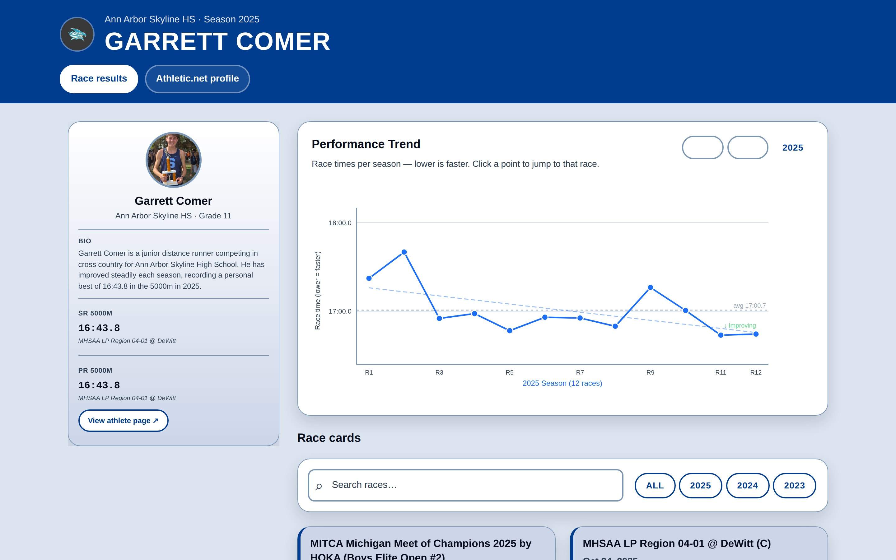
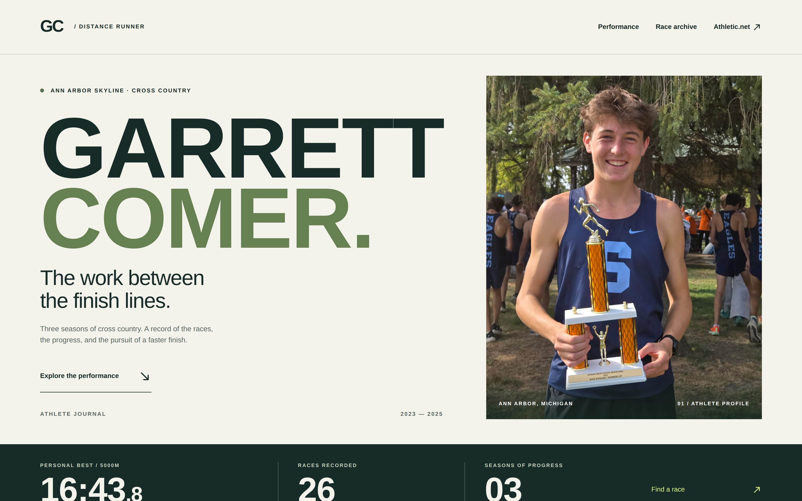

Problem
Garrett runs the 5000m in cross country. His results live on Athletic.net, one meet at a time. That works for looking up a single race, but not for seeing how a season went or how this year compares with last year.
Our team set three groups of users and their goals. We didn't interview them, so these were goals we wrote, not research findings:
- Garrett: see how his times changed, and find a specific race again.
- Coaches: compare seasons and spot races that stood out.
- Family: follow along without needing to read a results table.
I copied Garrett's results from Athletic.net into a spreadsheet: 26 races from August 2023 to November 2025, with the date, time, place and grade for each.
Comparing raw times is hard. Cross-country courses differ, so recorded times jump up and down from week to week. In 2023, one race was 1:19.5 slower than the race before it. Read one result at a time, that looks like a slump. Read across the season, later races in 2023 were still recorded faster than early ones. The design problem was making that comparison easy without letting the page claim more than the times can show.
Planning As A Team
We modeled four entity types: team, race, athlete and result. Each became a repeatable page section, so a new race could be added without touching the HTML. Before any styling, we built the page as plain, unstyled HTML that read in a sensible order on its own.
I drew the layouts for phone and large screens. Both put the most recent race first and show place, grade and time on every card, with everything else behind a "More" button.
First Build: Race Cards
My first build was mobile-first: a single column of race cards, with search and year filters above the list. I checked it with WAVE and aXe. aXe flagged color contrast and element sizes, which I fixed. By the April final, both tools reported no errors.
The cards gave every race a searchable, filterable entry. But they couldn't answer the season questions we had set. To compare races, a visitor had to remember times from card to card and do the math in their head. The archive needed a companion that showed a whole season at once.
Key Decisions
Space races by order, not by date
My first chart in April put all three seasons on one date axis. Most of the width went to the summers between seasons, when there were no races. Within a season, meets were sometimes only two to four days apart, so those points bunched together and were hard to click.
I made two changes. The chart now shows one season at a time, with a tab for each year, and races are spaced evenly by race order. Every race gets the same room and a clear click target. The trade-off is that the x-axis no longer shows how much time passed between races, so the axis is labeled by race number and the date stays in the tooltip and the archive.
A trend line beside every result, not instead of it
Each season shows three layers:
- Every recorded time as a connected point, so no race is hidden or smoothed away.
- A dashed trend line, a least-squares linear regression fitted to the season's races in order, labeled "Faster trend" or "Slower trend."
- A grey season-average line, for a quick reference point.
I used one straight line to summarize the overall linear direction of a season's recorded times in a single label, while every individual result stays on the chart. One extreme time can still pull the line, which is another reason the points stay visible.
In 2023, the 1:19.5 slower race still shows as a clear spike, while the trend line points toward faster recorded times over the season. The chart doesn't say that race was "bad" or that his fitness improved. It shows the recorded times and their overall direction. A note under the chart says times come from different courses and conditions.
Compare the season opener with last season's average
Hovering a point shows the change from the previous race. The first race of a season has no previous race, and the comparison people look for at that moment is with last year.
I compared it with the previous season's average, not its last race or its best. The average summarizes many recorded times, while the last race and the best race each reflect a single result. Garrett's 2025 opener was 17:22.3, which was 2:46.6 faster than his 2024 average recorded time. That is a descriptive comparison only. Courses, the point in the season and conditions all differ, so it doesn't show that he is a stronger runner than last year.
A text version of the chart
The chart is drawn on a canvas, which screen readers can't read. Below it, an expandable "View race data as a table" lists the underlying race data: every race with its date, time, season and change from the previous race. In October, I added a summary row at the start of each season, with its number of races, average time and trend direction, so the table carries what the chart summarizes, not only the raw times.
Clicking a point on the chart scrolls to that race in the archive and highlights it. The site also has a skip link, visible focus states, descriptive photo text and support for reduced-motion settings.
Redesign
In September, I redesigned the layout for my portfolio. During the course, most feedback was about accessibility and code comprehension, so the April version was solid underneath but plain on top.
I removed what had no content. Our sketches planned team comments, a race gallery and extra details behind "More" on every card. The data never included them, and in the April version all 26 cards opened to "Not available." The redesign drops those empty sections, and races with photos show them as the card background instead.
I gave it an editorial look. I wrote a new layout direction, an "athlete journal" with a large name, a stat bar and full-width race photos. I used OpenAI Codex to rebuild the front end from it, and reviewed every page at desktop and phone widths. The chart, trend lines, season comparison and race data table carried over, and the table later gained its season summary rows.
In an automated check on October 14, 2026, the redesigned page had 0 errors in WAVE and 0 issues in aXe. Automated tools don't cover the whole experience, so I also went through the chart table and race archive with VoiceOver.


April September
The April version and the September redesign. The data features carried over.
Phone · Profile
The redesigned site on a phone: the name, intro and photo.
Phone · Chart
The 2025 season chart on a phone, with season tabs above it.
Outcome & Reflection
The site is live and covers all 26 races from 2023 to 2025, with the chart's limits stated next to the chart, where people read it.
The biggest gap is that our user groups were ones we wrote, and I never watched any of them use the site. Next, I'd sit with Garrett, one of his coaches and a family member, and ask each to answer one question from the site, like "How did 2025 compare with 2024?" Where they look first, and whether they read "Faster trend" as a description or as proof, would tell me whether the chart works for people who don't think in regression lines.
I also learned to design for the data I actually have. The comment and gallery sections looked complete in the sketches, but with no content behind them, they only added empty clicks.